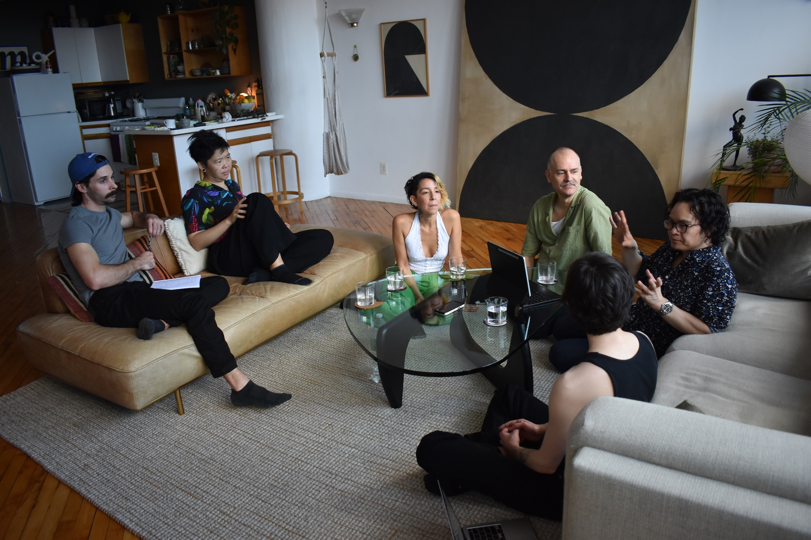
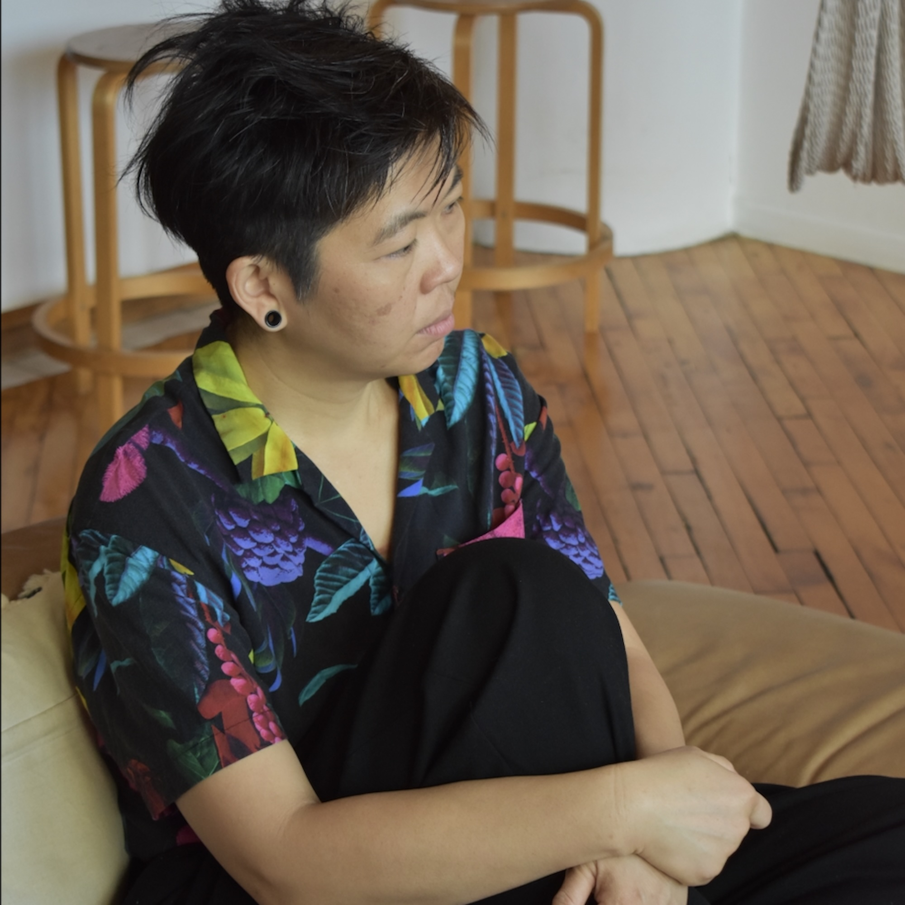
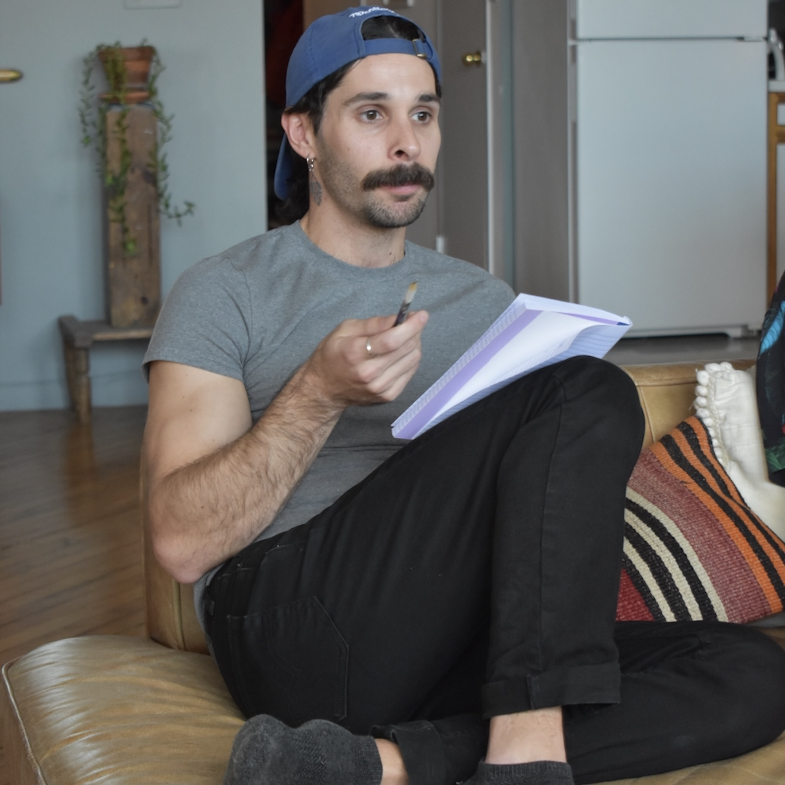
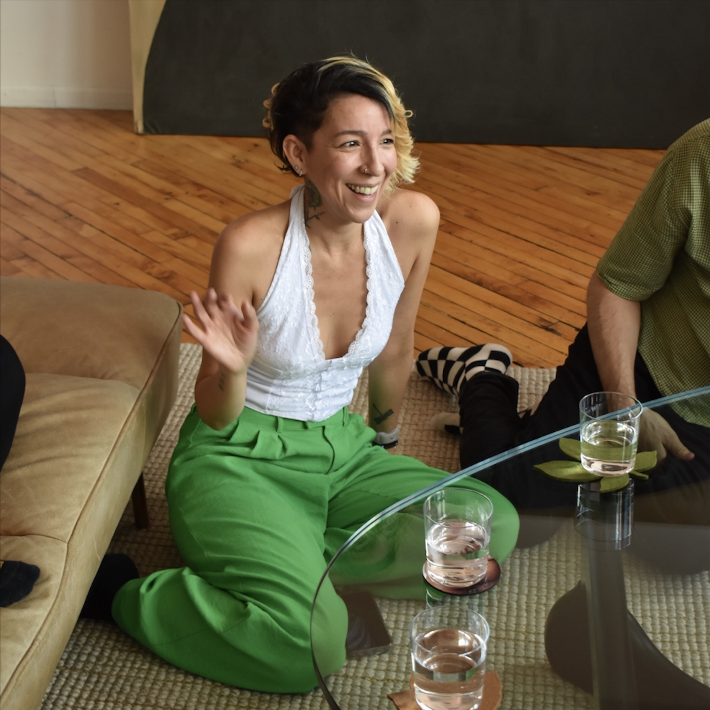
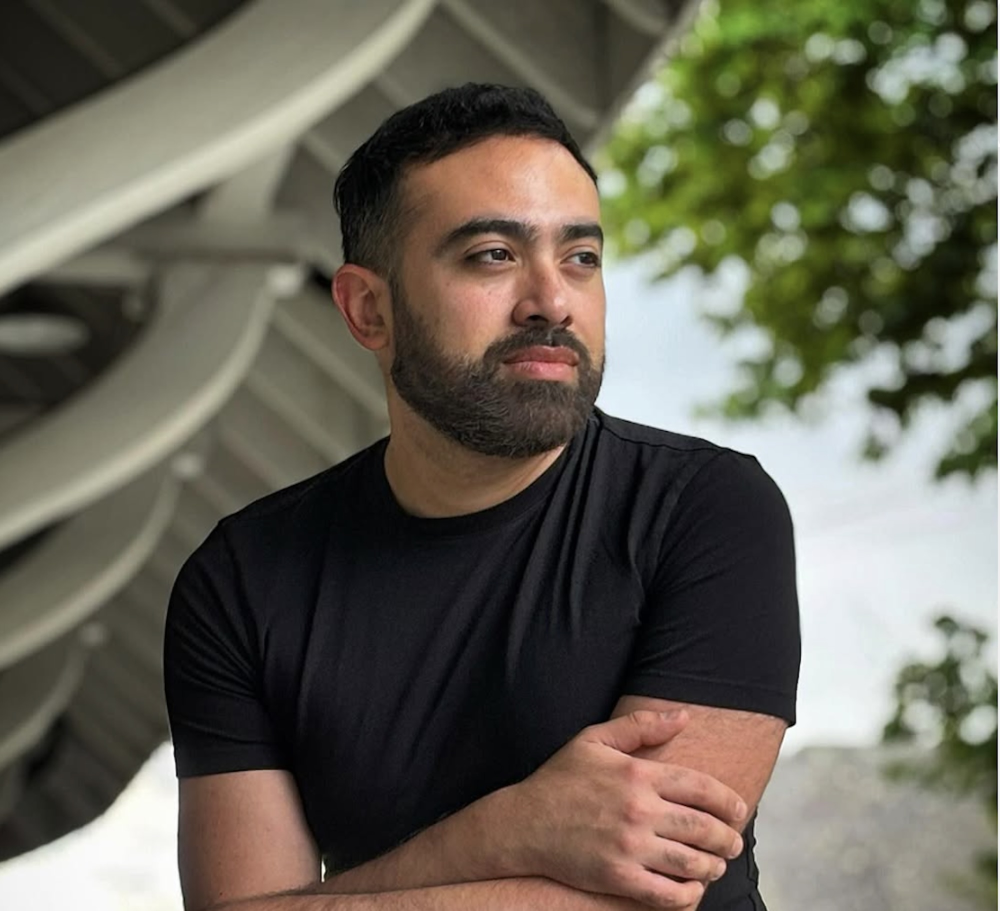
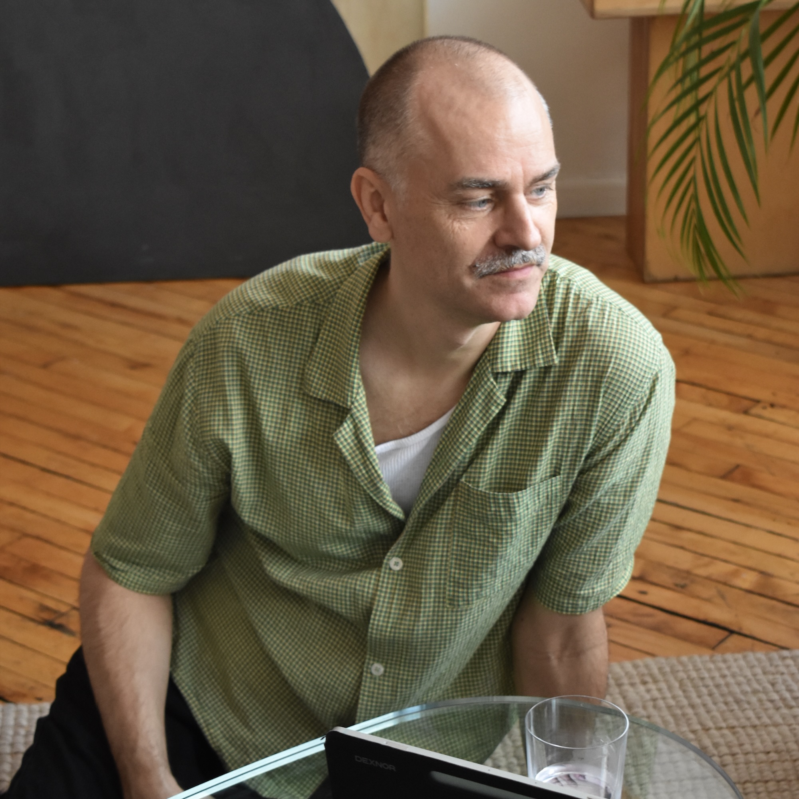
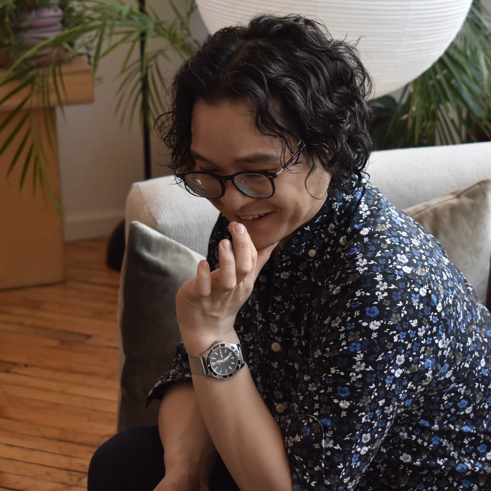
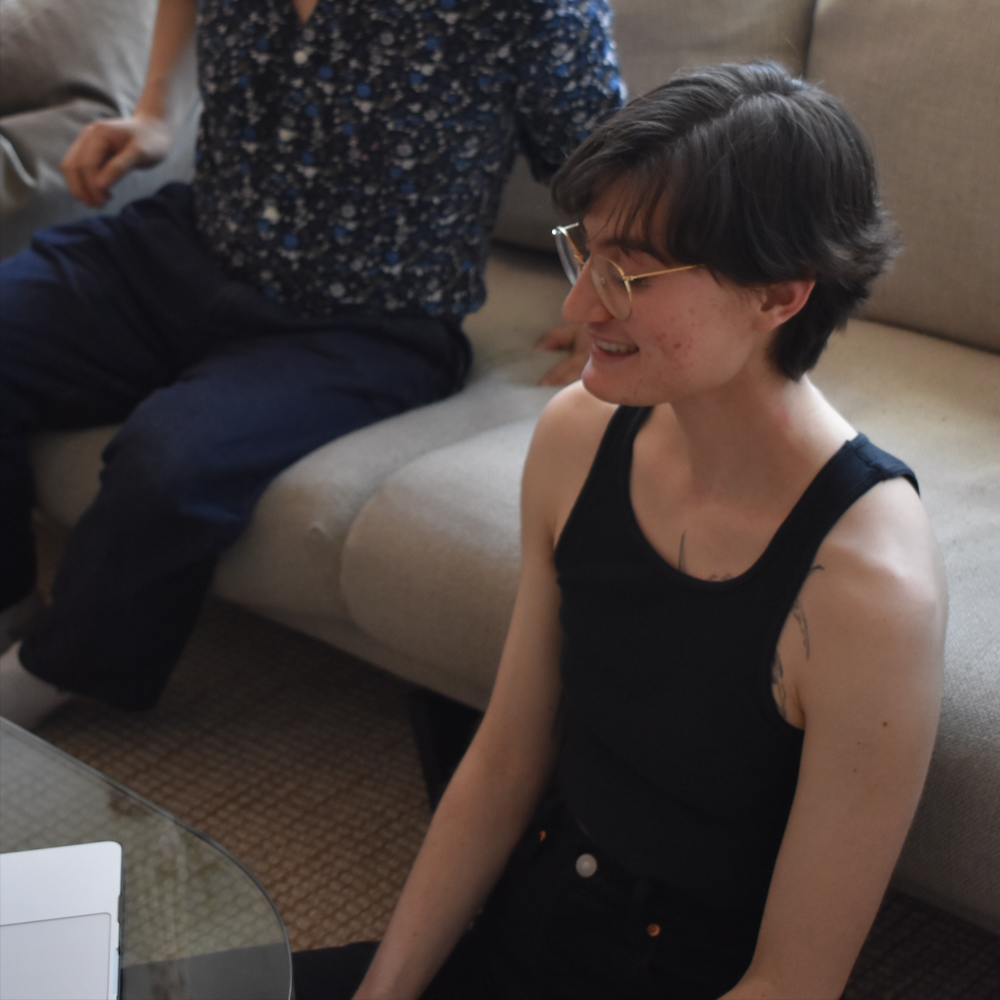

Proyecto de entrevistas a organizadores de tango queer en Nueva York
Este proyecto surgió de un curso sobre métodos de investigación cualitativa que cursé como parte de una maestría en Planificación Urbana. Para el trabajo final, debíamos realizar una investigación cualitativa empleando uno de los métodos estudiados; yo elegí las entrevistas en profundidad semiestructuradas. Afortunadamente, mi profesor fue bastante flexible con el tema, lo que me permitió aprovechar la tarea para entrevistar a otros organizadores de tango queer de Nueva York sobre sus experiencias y motivaciones para llevar a cabo estas actividades.
Comencé a organizar clases y eventos de tango queer junto con mi compañero Arty hace tres años —en junio de 2023— y, como muchos bailarines de tango entenderán, esta actividad ha llegado a ocupar un lugar central en mi vida. Formar parte del mundo del tango queer me ha aportado una sensación de alegría y plenitud inmensa, difícil de expresar con palabras. Espero que las citas, imágenes y fragmentos del proceso que comparto aquí logren transmitir algo de esa alegría, así como las múltiples posibilidades que el tango —y el tango queer en particular— ofrece a quienes buscan conexión, comunidad, sanación, bienestar y expresión.
El Proceso
Agosto 2025
- 6 entrevistas en profundidad y semiestructuradas (3 en inglés, 3 en español) de entre 1 y 1,5 horas de duración, seguidas de conversaciones informales individuales con le entrevistadore
- Codificación y análisis de las transcripciones de las entrevistas para identificar temas y asuntos clave (Códigos: Facilidad/Comodidad, Presencia, Expresión, Pertenencia, Lenguaje corporal, Libertad, Sexualidad, Intimidad, Espiritualidad/Iglesia, Discusión, Magia, Diversidad, Conexión)
- Elaboración de un informe formal
Enero-Febrero 2026
- Selección de 5 preguntas clave y citas significativas de cada entrevista para su publicación, traducción, edición ligera y síntesis de los fragmentos seleccionados
- Aprobación de las citas por parte de los entrevistados
Marzo 2026
- Los entrevistados leen las citas seleccionadas de los otros participantes
- Reunión de los participantes para bailar, comer tortitas y hablar sobre el proyecto

Mesa Redonda/Discusión
El sábado 14 de marzo de 2026, los participantes (menos Leo, quien estuvo enfermo ese día) se reunieron para bailar, comer y hablar del proyecto. A continuación, se presenta un fragmento del final de dicha conversación:
Los Participantes
Phi Lee Lam

Phi Lee Lam es una bailarina y organizadora de tango queer en la ciudad de Nueva York. Se interesó por bailar ambos roles tras descubrir el tango queer en Buenos Aires. Desde 2015, se ha formado con Carla Marano y muchos otros bailarines de su generación.
En los últimos años, ha sido invitada a impartir clases y realizar exhibiciones en festivales de tango, tanto queer como convencionales, en Estados Unidos y Francia. Su enseñanza se basa en la improvisación, la sensibilidad, la adaptabilidad y el uso de una técnica natural, corporalmente integrada y eficiente. Asimismo, ha organizado eventos para ofrecer espacios seguros a mujeres y bailarines LGBTQIA+; ha facilitado mesas redondas y seminarios; ha colaborado con artistas, colectivos y organizadores de todo el mundo para ampliar el acceso a clases de tango inclusivas, sin distinción de género o de rol fijo; y ha contribuido a visibilizar a los bailarines de tango queer mediante la organización de presentaciones públicas.
Mati Donadío

Mati creció en un pequeño pueblo de Uruguay y comenzó a bailar tango en 2011. Siempre ha formado parte de las comunidades de tango queer. Mati ha desempeñado diversos roles en la comunidad tanguera: enseñanza, organización de milongas, TDJ y actuaciones. Su profunda pasión por la música de tango le llevó a explorar el baile y a participar activamente en diversos ámbitos del tango, tanto en el plano social como en el escénico. Junto con Mikael, coorganiza Miranda, un espacio donde las personas que bailan tango queer pueden profundizar su comprensión del tango, explorar los roles y construir una comunidad significativa a través del baile.
Norma Leal

Norma Leal es una artista, organizadora comunitaria y bailarine de tango aficionade colombiane con más de 15 años de experiencia. Criada en una familia de músicos y artistas, creció bailando música tradicional colombiana y posteriormente trabajó como actriz, directora y líder de proyectos culturales. Desde que hizo pública su identidad LGBTQIA+, se ha dedicado al activismo en favor de esta comunidad y a crear espacios más seguros e inclusivos en los ámbitos de las artes y el baile social. Es la creadora de Tiny Práctica y Switcher Witches Tango Night en la ciudad de Nueva York, un evento de tango inclusivo que celebra la fluidez de roles, la conexión y la comunidad, con un enfoque especial en mujeres y personas no binarias que bailan ambos roles.
Leo Sardella

Leo comenzó a bailar tango profesionalmente en su ciudad natal, Buenos Aires, y actuó en escenarios argentinos de gran prestigio, como los teatros Colón y Cervantes. Se mudó a Nueva York en 2011, donde cofundó la compañía de danza Malevaje Tango y, posteriormente, Friends of Argentine Tango. Ha participado en festivales internacionales de tango en todo el mundo y se ha presentado en Estados Unidos, Inglaterra, Francia, Alemania, Italia, Suiza, Suecia, Dinamarca, Islandia, República Dominicana, México, Bolivia y Argentina. Fue el coreógrafo de *Male Tango* (Teatro IATI), obra galardonada con dos premios HOLA y nominada a dos premios Latin ACE. Imparte clases semanales de tango con NY City Tango y es coorganizador y anfitrión de la BK Pride Milonga.
Mikael Schulz

Mikael es un fotógrafo sueco radicado en Brooklyn que, a lo largo de los años, ha organizado y coorganizado eventos de tango queer en Nueva York, incluyendo milongas, prácticas, talleres y reuniones comunitarias. Junto con Mati, coorganiza Miranda, un espacio donde los bailarines queer pueden profundizar su comprensión del tango, explorar los roles y construir una comunidad significativa a través del baile. A Mikael le apasiona crear espacios acogedores e inclusivos donde personas de diversos orígenes, identidades y niveles de experiencia en el baile puedan conectar. Para él, el tango queer se basa en la comunidad, el cuidado, el espíritu lúdico y la libertad de explorar tanto el baile como a nosotros mismos. Cree que el tango tiene el poder de generar conexiones humanas profundas y se siente agradecido de formar parte de una comunidad que sigue reinventando lo que este baile puede llegar a ser.
Arty Zhang

Arty comenzó a bailar durante sus años universitarios y lleva varios años participando en las escenas de tango y swing del Bay Area y de Nueva York. Es co-organizador de Queer Swing Dance NYC y cofundador de Queer Partner Dance NYC (un nombre algo engañoso, ya que QPDNYC se centra específicamente en el tango). Puedes encontrarlo en la pista de baile manteniendo la energía alta durante las cortinas (con cualquier estilo de música) y, de vez en cuando, ver aparecer a su alter ego, ¡drag queen Joy Luck Club!
Noah Wharton

Noah tomó su primera clase de tango a finales de 2022; allí conoció a Arty y ambos se hicieron amigos rápidamente. Anteriormente, formó parte de la Claremont Colleges Ballroom Dance Company, experiencia que le inspiró a organizar eventos y clases de baile en pareja para la comunidad queer, bajo los mismos principios de inclusión y alegría. Junto con Arty, fundó Queer Partner Dance NYC en 2023, iniciativa que ofrece clases de tango queer con tarifas flexibles en el Manhattan LGBT Center todos los sábados.